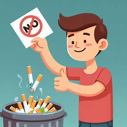

El cigarrillo es un producto de tabaco que se consume ampliamente a nivel mundial. Consiste en tabaco picado envuelto en papel, con un filtro integrado que intenta reducir los daños a la salud[^1^][2].
Un cigarrillo contiene más de 7,000 sustancias químicas, muchas de las cuales son tóxicas y al menos 69 de ellas son conocidas por causar cáncer[^2^][5]. Entre estas sustancias se encuentran:
Fumar cigarrillos es la principal causa de cáncer y está asociado con un mayor riesgo de desarrollar enfermedades cardíacas, accidentes cerebrovasculares y enfermedades respiratorias crónicas como la EPOC[^3^][1].
El tabaquismo afecta no solo a quienes fuman, sino también a quienes están expuestos al humo de segunda mano. Además, tiene un impacto significativo en la economía debido a los costos de atención médica y la pérdida de productividad[^1^][2].
Dejar de fumar tiene beneficios inmediatos y a largo plazo para la salud. Existen diversos métodos y programas de apoyo para ayudar a las personas a superar la adicción al tabaco[^3^][1].
Información proporcionada por el National Cancer Institute y otras fuentes confiables.